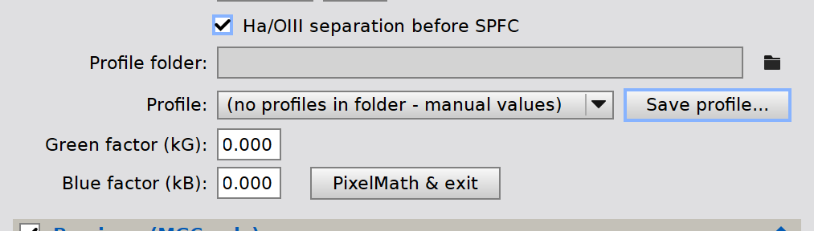
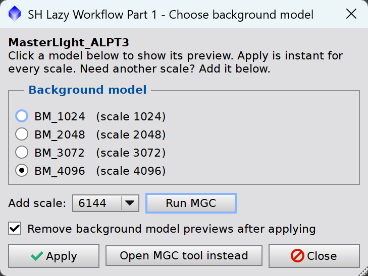
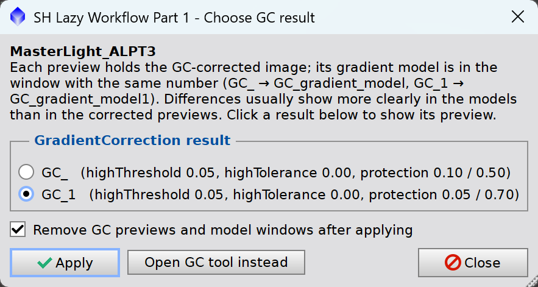

1 Description
[hide]
The Space Hunter Lazy Workflow automates the repetitive, non-artistic steps of processing a linear OSC image, so you only make the decisions that need your judgment. It comes in two parts:
- Part 1 (this script) takes a cropped image from plate solving to background extraction.
- Part 2 (SH Lazy Workflow Part 2) continues from the background-extracted image to a star-separated image that is ready to stretch.
Every step can be switched on or off. If you prefer GradientCorrection (GC) or DynamicBackgroundExtraction (DBE) to MultiscaleGradientCorrection (MGC), you can switch with one checkbox.
Part 1 sequence: Plate Solve → (Ha/OIII separation) → SPFC → Previews → MGC → choose and apply a background model. Alternatives: GC or DBE.
2 Usage
[hide]
2.1 The Dialog
Each workflow step is a collapsible section with a checkbox. By default Plate Solve, SPFC, Previews and MGC are on; GC and DBE are off.
Step |
Default |
Dependencies |
|---|---|---|
1 Plate Solve (with ASTAP) |
On |
Can run alone. ASTAP can only be on while Plate Solve is on. |
On |
Turning it on also turns on Plate Solve and ASTAP. |
|
Off |
Only in narrowband filters mode. Runs just before SPFC. |
|
On, 4 previews |
Turned on by MGC; turned off by GC and DBE. |
|
On |
Turning it on also turns on SPFC and Previews (and so Plate Solve). |
|
Off |
Turning it on turns off SPFC, Previews, MGC and DBE, and turns on Plate Solve. GC makes its own two previews. |
|
Off |
Turning it on turns off SPFC, Previews, MGC and GC, and turns on Plate Solve. |
2.2 Step 1 — Smart Plate Solve
Checks whether the image already has an astrometric solution. If it does, the step is skipped. If not, the script reads the FITS keywords:
- If coordinates and image scale are present, the script solves the image with PixInsight's ImageSolver engine. No dialog opens.
- If they are missing and ASTAP Blind Solve is checked (the default), ASTAP runs first and writes the WCS keywords. A blind solve can take 10–30 seconds.
If solving fails, the console says so. Solve the image manually with and run Part 1 again.
SPFC and MGC need this astrometric solution, and so does SPCC in Part 2.
2.3 Step 2 — SPFC (SpectrophotometricFluxCalibration)
Applies spectrophotometric flux calibration with the camera and filter curves selected in the dialog. This linearises the colour response of the image, and MGC needs it.
-
Camera / Sensor
-
The camera's QE curve. Ideal QE curve if yours isn't listed.
-
Gray filter
-
The luminance (L) filter curve.
-
RGB filters
-
The colour filter set, e.g. the camera's own Bayer filters.
-
Generate graphs
-
Lets SPFC show its calibration graphs.
-
Narrowband filters mode
-
For a dual-band filter (e.g. Optolong L-eXtreme or L-Ultimate, Antlia ALP-T, Askar ColorMagic D1). The filter lists are replaced by wavelength and bandwidth (nm) for red, green and blue, e.g. 656.3 / 500.7 / 500.7 for Ha/OIII/OIII.
2.3.1 Ha/OIII Separation (dual-band only)

Why. With a dual-band filter on an OSC sensor, Ha light also reaches the green and blue pixels. So G and B are not pure OIII, and SPFC and MGC (with an OIII reference) work on the wrong signal. In an Ha-rich field the green channel can look like an Ha image.
What it does. Before SPFC, the script subtracts a fraction of the red (Ha) channel's signal above its median from G and B with PixelMath. Red stays unchanged:
R: $T G: $T - ( $T[0] - med( $T[0] ) ) * kG B: $T - ( $T[0] - med( $T[0] ) ) * kB
The method is from the PixInsight video MultiscaleGradientCorrection — Dual-Band OSC Images (II) [1].
When it runs. Only when SPFC, Narrowband filters mode and Ha/OIII separation before SPFC are all checked. It runs once per image: it is skipped if the image is not a colour image, if both factors are 0, if it was already applied, or if SPFC was already applied (undo SPFC in History Explorer first). If the separation itself fails, the script stops.
2.3.1.1 Finding the Factors
The factors kG and kB depend on your camera and filter, not on the target, so you find them once.
- Click PixelMath & exit. The dialog closes without processing and PixelMath opens with the separation expressions (0.5 if both factors are 0).
- Create a preview over an area with Ha nebulosity and apply PixelMath to it. Look at G and B separately.
- Lower the factor (Undo between tries) until the Ha structures just disappear in G and B, not until they turn dark. Real OIII (for example the Crescent Nebula's shell) stays.
- Run Part 1 again, enter kG and kB, and click Save profile....
Example: IMX571 sensor with an Antlia ALP-T filter, kG = 0.115, kB = 0.05.
2.3.1.2 Profiles
Keep one profile per camera and filter combination:
- Choose a Profile folder once (folder button). The folder is remembered.
- Profile lists the folder's .txt files. Choosing one fills in its factors; it is re-read from the file each time the script starts.
- Save profile... writes the current kG and kB to a new file. Typing a factor switches the profile to (manual values); save it to keep it.
- You can also save PixelMath's Instance Source Code (the square button at the bottom right of PixelMath) as a .txt file in the folder.
Profile files are only read for their two numbers. They are never executed.
2.4 Step 3 — Create Previews (MGC only)
Creates 1 to 4 full-size previews (default 4), one for each MGC gradient scale. Existing previews are deleted first. The names depend on what runs:
Situation |
Preview names |
|---|---|
Default run (with MGC) |
BM_768, BM_1024, ...: one background model per gradient scale. The same scale twice gives BM_1024_1 (as in +Previews). |
Previews run alone |
Preview, Preview1, ... |
GC selected |
GC creates its own GC_ and GC_1. |
DBE selected |
No previews are created. |
To add more previews later, or to use previews on their own, use +Previews.
2.5 Step 4 — MGC (MultiscaleGradientCorrection)
Runs MGC on each preview with its own gradient scale (default 768, 1024, 2048 and 3072), using the MARS database as reference. Each preview then shows its gradient model; the script pauses 3 seconds on each so you can follow along.
By default MGC uses L/R/G/B. For a dual-band filter, check Filter selection and choose L, Ha, OIII, OIII, together with narrowband filters mode in SPFC and, ideally, the Ha/OIII separation ([1]).
2.5.1 Choose Background Model

When all previews are done, the Choose background model window opens. While it is open, PixInsight is busy: you can't zoom or pan the image. Click a model in the list to show its preview.
-
Apply
-
Applies the selected model to the main image at once: image − model + median(model). The model used is noted in the FITS history.
-
Add scale / Run MGC
-
If none of the models is good enough, run MGC at another scale. It gets its own new BM_ preview with the same settings and appears in the list, ready to compare and apply.
-
Remove background model previews after applying
-
On by default.
-
Open MGC tool instead
-
Opens the MGC tool with the selected preview's settings, for manual testing.
-
Close
-
Leaves the image unchanged.
2.6 Step 5 — GC (GradientCorrection)
Off by default. GC also starts automatically when SPFC or MGC fails, for example when the MARS database doesn't cover the target.
GC runs with two presets on its own previews:
Preview |
Preset |
Gradient model window |
|---|---|---|
GC_ |
GC defaults (protection 0.10 / 0.50): follows the gradient closely, but can leave blotches on nebula-rich fields. |
GC_gradient_model |
GC_1 |
Stronger protection (0.05 / 0.70): smoother model that spares nebulae, but may under-correct. |
GC_gradient_model1 |
The gradient model windows get an Adaptive Auto STF. Differences usually show more clearly in the models than in the corrected previews. Then the Choose GC result window opens:

It works like Choose background model: Apply copies the selected preview to the main image, Remove GC previews and model windows after applying is on by default, and Open GC tool instead opens GC with that preview's settings.
Close old GC_gradient_model windows before running GC. Otherwise GC numbers the new models differently and they no longer match the preview names.
2.7 Step 6 — DBE (Custom DynamicBackgroundExtraction)
Off by default. Intended for a manual background extraction. The DynamicBackgroundExtraction tool opens with preset values and sample points around the frame. Adjust, add, move or delete samples, then apply.
2.8 Notes
If a gradient correction from this script (MGC or GC) is already applied, the script warns before it runs: correcting twice can damage the image. To try another model, go back one step in History Explorer first. The warning follows History Explorer: after undoing the correction, it no longer appears.
The separation and SPFC are skipped automatically when they were already applied to the image.
If you undo the image history back to the start, the astrometric solution is lost and the next run solves the image again.
3 Requirements and License
[hide]
3.1 Requirements
Both parts
- Windows operating system.
- PixInsight 1.9.5 or later.
- An image from a one-shot colour (OSC) camera, captured with a broadband, light-pollution or single dual-narrowband (DNB) filter. The RGB channels are not split into separate greyscale images.
- An image that is already cropped. If you stack in WBPP with Auto Crop and Astrometric Solution enabled, you can start without cropping and the plate solve step is skipped.
Part 1
- The MARS database (any drive).
- ASTAP with the D50 star database, preferably in C:\Program Files\astap.
Part 2
- BlurXTerminator, StarXTerminator and NoiseXTerminator.
- Optional: StarNet2, installed from its PixInsight repository.
- Optional: MLDenoise and its model file (.xmlm), saved on this computer. They are available only to licensed PixInsight users: log in on pixinsight.com with your license to download them.
- AutoColor is fully integrated into Part 2. You don't need to install or load the AutoColor script separately. (The stand-alone AutoColor V8 script is in the MOP V8 scripts repository, if you want to use it on its own.)
- Internet access only if you use Check dust map in the background pre-check.
If the scripts can't find the MARS database or ASTAP the first time they run, they ask you to locate it. The path is saved for later runs. If BlurXTerminator or NoiseXTerminator isn't installed, that step is skipped. If StarXTerminator isn't installed, Part 2 uses StarNet2 instead.
If you combine two DNB filters (Ha/OIII and SII/OIII) into a Hubble-palette image, these scripts are not the right tool.
3.2 The Button Bar
The buttons at the bottom of the dialog, from left to right:
-
New Instance
-
Drag the triangle onto the workspace to save the current settings as a process icon.
-
User Guide
-
Opens the user guide.
-
Deselect All
-
Clears every workflow step.
-
Reset Workflow
-
Returns the workflow steps to their defaults. Equipment settings are not changed.
-
Reset Settings
-
(gear) Returns the equipment settings (camera, filters, white reference, gradient scales) to their defaults. Workflow steps are not changed.
All workflow and equipment settings are saved when you run the script and come back the next time you open it.
3.3 License
Both scripts are released under the MIT License, Copyright © 2026 Georg G. Albrecht. You may use, modify and redistribute them. Exception: the AutoColor code in Part 2 (© 2016 Hartmut V. Bornemann, used with written permission) must be kept in its original form and needs a separate written agreement with its author. See the LICENSE on GitHub.
3.4 Bonus Scripts
Three small helper scripts come with the Lazy Workflow:
KillPreviews: deletes all previews in the active image. Part 1's apply windows and Part 2's background finder now remove their previews themselves, so you only need it for leftovers, for example after closing Part 1's apply window without applying. |
|
NamePreviews: if you decide to use exclusion zones in Part 2, draw previews over the areas to exclude and run NamePreviews. It renames all previews in the image to Exclude1, Exclude2, ..., so remove any other previews first. Part 2 also runs without exclusion zones. |
|
+Previews (manual): creates 1–6 full-size previews and zooms each to fit. Prefixes: BM_ (MGC background models, with a gradient scale per preview), GC_ (continues the GC_, GC_1, ... numbering, matching GC's model names), Preview, or your own text. Use it after Part 1 to add more models, or on its own for any process where a full-size preview is useful. |
4 Acknowledgments
[hide]
Thanks to the PixInsight team (Pleiades Astrophoto) for PixInsight; to Franklin Marek (SetiAstro) for Blind Solver 2000, whose approach inspired the ASTAP solver step; and to Han Kleijn for ASTAP. Thanks also to the beta testers Jeff, Mike and Stefan.
References
[1] Pleiades Astrophoto, MultiscaleGradientCorrection — Dual-Band OSC Images (II), PixInsight YouTube channel, https://www.youtube.com/watch?v=ZYP7niz2hKU
Copyright © 2026 Georg G. Albrecht. MIT License.